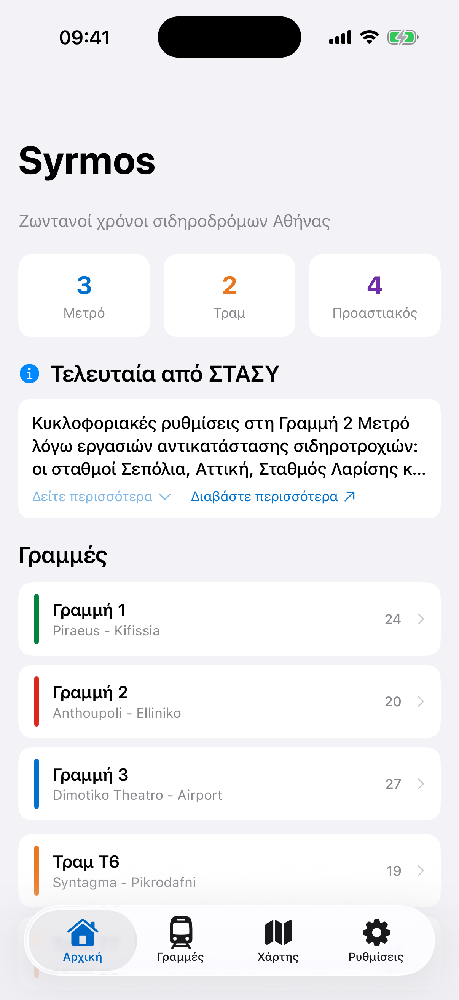
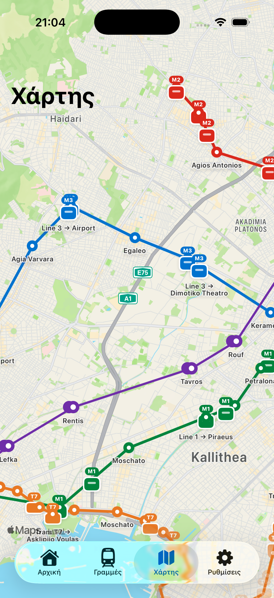
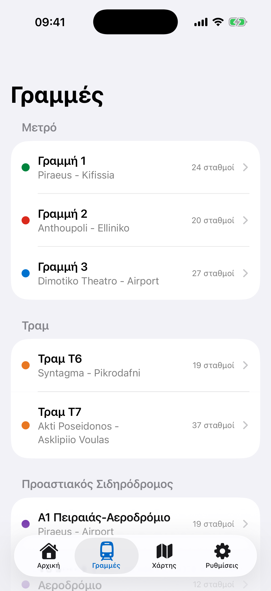
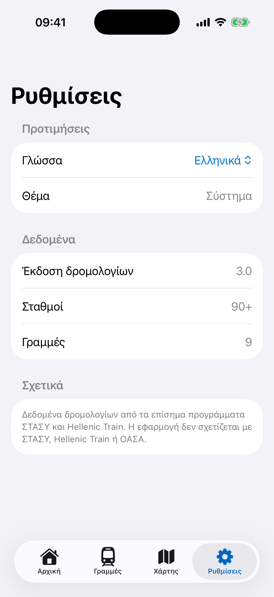
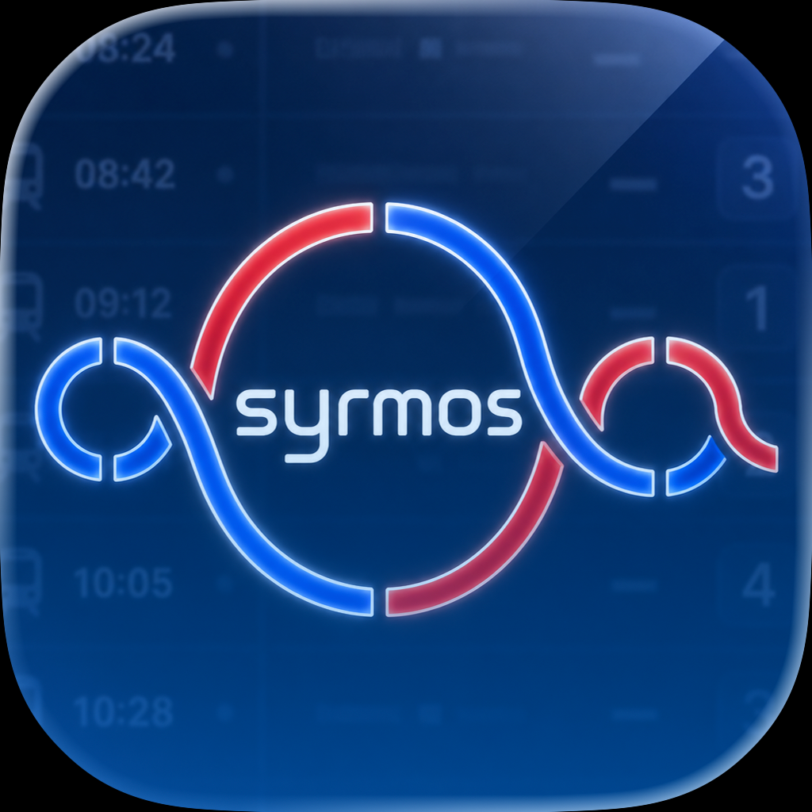
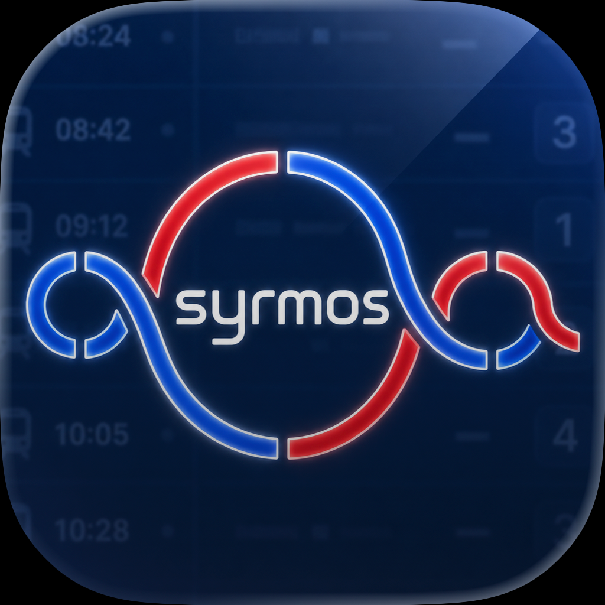
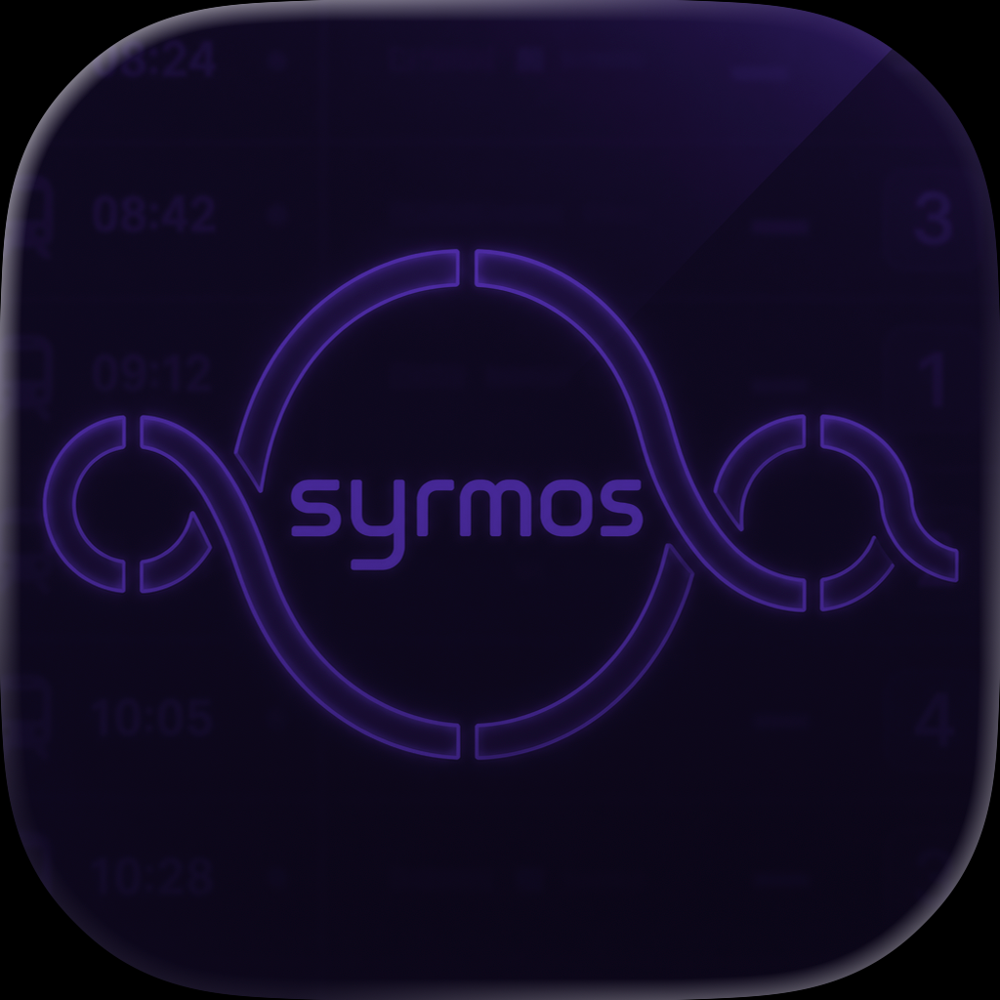

{kind=link}

Home screen
Everything a writer, editor, or reviewer needs to cover Syrmos: the boilerplate, the fact sheet, native screenshots at store resolution, and the app icon in every variant.
About
Syrmos is a free, offline-first companion for the Athens public transit network. It bundles a full snapshot of every metro, tram, and suburban schedule inside the release itself, so it launches with the right data underground, on airplane mode, or in a station with no signal, and syncs quietly when a connection returns.
Built as a single Kotlin Multiplatform codebase, Syrmos ships as a native iOS app, a native Android app, and a WebAssembly web app from the same shared logic. It covers Metro lines 1, 2, and 3, Tram T6 and T7, and Suburban lines A1 through A4, with live train positions, a GPS nearest-station lookup, and a bilingual English and Greek interface. It is developed independently by Petros Dhespollari in Athens, and is not affiliated with STASY, OASA, or Hellenic Train.
Fact sheet
Media & brand assets
Click a thumbnail to open the full-resolution file, or use the Download link to save it locally. Everything below is included in the ZIP.







Press contact
Petros Dhespollari
Creator and maintainer
Always up for collaborations, partnerships, and building things with people who care about the craft.
{kind=link}
{kind=link}
{kind=link}
{kind=link}
{kind=link}
{kind=link}
{kind=link}